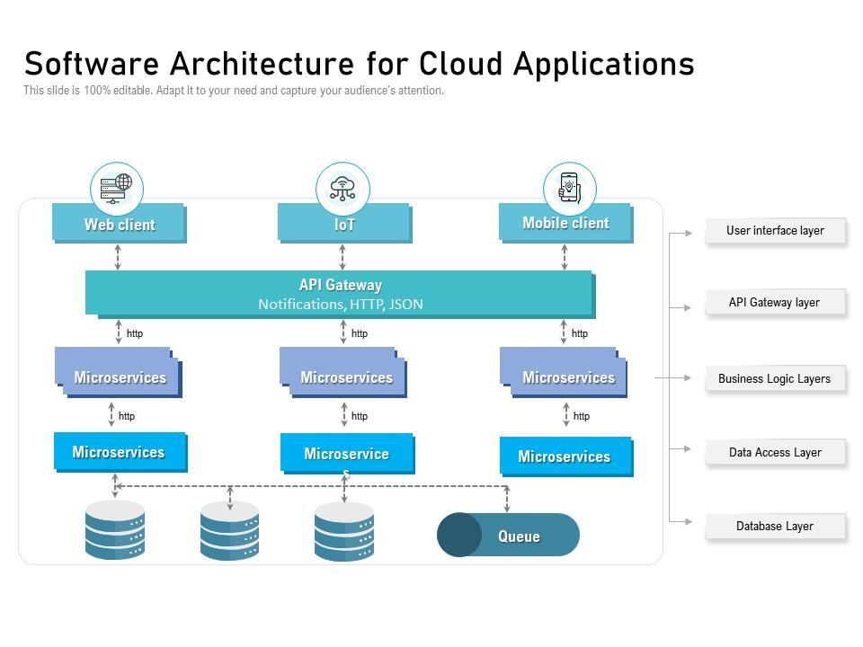

Technologie-Stack & Expertise
Tiefgreifende Expertise in der objektorientierten Entwicklung (Java/JEE, Smalltalk) und im Entwurf robuster Enterprise-Architekturen. Spezialisiert auf Microservices, REST-APIs und die Integration komplexer Legacy-Systeme in moderne Cloud-Umgebungen (AWS).

Backend & Sprachen
Java (J2EE) Smalltalk Objektorientierte Programmierung (OOP) Enterprise ArchitectureInfrastructure & Cloud
AWS (Amazon Web Services) Cloud-Architekturen Digitalisierung komplexer SystemeTools & Methodik
Jira Confluence Agile Softwareentwicklung (Scrum/SAFe) Requirements EngineeringSchwerpunkte in Projekten
- Konzeption und Realisierung von komplexen Java-basierten Enterprise-Lösungen.
- Migration von Legacy-Systemen (z. B. Smalltalk) in moderne Architekturen.
- Design und Implementierung skalierbarer Cloud-Infrastrukturen auf AWS.
- Schnittstellenmanagement und Integration in heterogene IT-Landschaften.